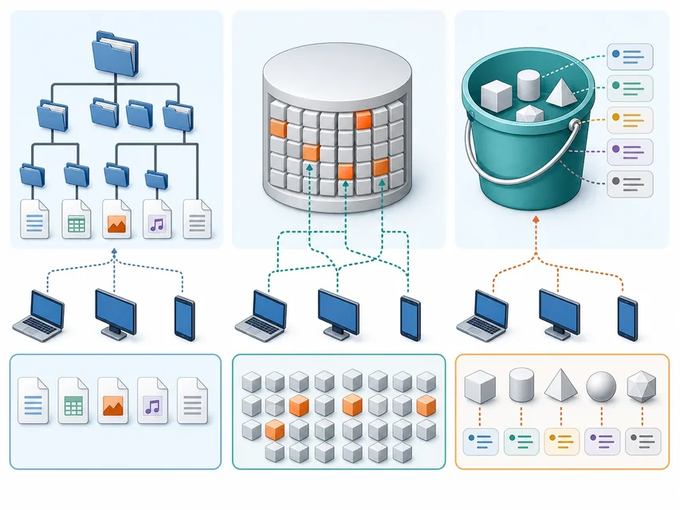

本地存储
使用方直接拥有或管理设备和文件系统
容量、备份、替换和跨设备访问由自己安排
让数据拥有可访问、可管理的云端边界
 VER. 2608
Built with impress.js
VER. 2608
Built with impress.js
沿着访问语义和生命周期证据解释云存储服务如何工作
用户通过网络存放、读取和保护数据，并按需扩展容量
使用方直接拥有或管理设备和文件系统
容量、备份、替换和跨设备访问由自己安排
平台管理底层存储资源
用户通过服务入口按需管理数据与权限
云存储首先是一种在线数据服务，不是一句容量无限的宣传语
数据服务的结果取决于冗余、网络、权限和管理策略
容量可以按需求增加，但带宽、请求、预算和配额仍有边界
副本、冗余和备份可以降低部分风险，但不替代恢复演练
跨设备访问依赖网络、身份、权限和服务可用性
桶策略、身份、加密、审计和数据分类共同形成保护边界
“放到云端”改变了管理方式，却没有取消数据责任
| 场景 | 判断轴 | 仍需核查的边界 |
|---|---|---|
| 硬盘接在个人电脑上 | 服务边界：本地／云／待判断 | 容量、备份和跨设备访问 |
| 云主机挂载一块虚拟磁盘 | 存储形式：文件／块／对象／待判断 | 主机、卷和应用的依赖 |
| 通过接口读取照片对象 | 存储形式：文件／块／对象／待判断 | 权限、网络和对象状态 |
| 多地保存备份副本 | 存储形式：文件／块／对象／待判断 | 副本策略和恢复是否验证 |
先找数据如何进入、如何读取和谁负责保护，再判断是不是云存储服务
一条问谁控制，另一条问应用怎样读写
| 分类轴 | 典型类型 | 它回答的问题 |
|---|---|---|
| 服务对象与控制 | 个人、私有、公有、混合云存储 | 谁建设、谁使用、谁承担管理责任 |
| 数据访问与组织 | 文件、块、对象存储 | 应用通过什么接口和语义读写 |
| 两轴交叉 | 公有云对象存储、私有云文件存储 | 同一服务同时具有两种属性 |
不要把“公有云存储”和“对象存储”当成同一层级的答案
分类重点是控制、共享范围和责任分配
个人设备与账户之间的同步、备份和访问
组织控制服务边界和内部用户，设备与平台可以自建或委托管理
服务商管理共享基础设施，用户在服务边界内管理数据和权限
组合不同控制边界，需明确数据去向与迁移
同一类文件、块或对象服务可以出现在不同的控制边界中
| 场景 | 请先填写服务对象轴 | 请再填写存储形式轴 |
|---|---|---|
| 公有云中的照片对象 | 个人／私有／公有／混合 | 文件／块／对象／待判断 |
| 企业内部共享目录 | 个人／私有／公有／混合 | 文件／块／对象／待判断 |
| 云主机的数据库数据盘 | 个人／私有／公有／混合 | 文件／块／对象／待判断 |
| 本地与云端共同保存备份 | 个人／私有／公有／混合 | 文件／块／对象／待判断 |
先标控制边界，再标访问形式，两个答案可以同时成立
存储类型先看访问语义，不按产品名称判断
| 类型 | 应用看到什么 | 适合场景 | 关键边界 |
|---|---|---|---|
| 文件 | 目录与文件系统 | 共享目录、协作文件 | 依赖文件接口和权限 |
| 块 | 可挂载的磁盘块 | 云主机卷、数据库 | 由主机管理文件系统 |
| 对象 | 数据与元数据封装 | 图片、视频、文档、备份 | 通过接口 API 或网络访问 |

不把“更快”或“更便宜”当作脱离场景的排名
需要主机直接挂载并频繁更新
块存储更贴近这种磁盘语义
需要目录、文件名和协作权限
文件存储更贴近这种共享语义
需要海量保存、接口访问和元数据
对象存储更贴近这种数据服务
当访问语义改变，容量和性能之外的管理方式也会改变
| 需求 | 请先判断存储形式或服务角色 | 请写出判断依据 |
|---|---|---|
| 多台主机共同读取素材目录 | 文件／块／对象／证据不足 | 填写目录、文件接口或其他访问语义证据 |
| 虚拟机的系统盘 | 文件／块／对象／证据不足 | 填写挂载、主机或磁盘语义证据 |
| 海量视频备份与下载 | 文件／块／对象／证据不足 | 填写对象、元数据或接口访问证据 |
| 容器镜像分发 | 仓库服务／底层存储待判断 | 填写版本化分发和镜像读取证据 |
桶划定管理边界，元数据描述对象；版本、删除和恢复由具体服务决定
定位：桶 + 对象名称 → 对象
读写：接口 API ↔ 对象数据 + 元数据
对象的逻辑容器，也是策略和生命周期规则的边界
图片、视频、文档、日志和备份等实际内容
大小、类型、时间、标签、校验值或其他描述属性
用于寻址和组织，带有路径前缀也不等于本地目录
对象存储的管理能力来自数据、元数据、桶和访问策略的组合
课堂默认使用私有桶，公开访问需要明确风险和用途
谁在请求对象，使用哪个账户、角色或临时凭证
桶策略、对象权限和最小访问范围是否允许本次操作
请求能否到达服务入口，出口和访问路径是否正常
对象是否存在、是否被标记删除、版本是否可读
“找不到对象”可能来自名称、权限、网络或版本状态，而不只是对象不存在
| 现象 | 请先判断检查对象 | 请写出判断依据 |
|---|---|---|
| 桶列表看不到目标桶 | 身份／名称／其他 | 填写账户、名称、位置或列表权限证据 |
| 对象存在但返回拒绝 | 策略／权限／其他 | 填写读取者身份和最小权限证据 |
| 下载任务一直失败 | 网络／对象状态／其他 | 填写服务入口、版本或请求日志证据 |
| 删除后仍占用容量 | 版本／删除机制／其他 | 填写旧版本、删除标记或保留策略证据 |
逐项核对身份、策略、网络、名称和版本状态
演示只使用样例、最小权限和生命周期证据，不展示购买页面或账号细节
课堂演示的目标是理解对象关系和生命周期，不是记住某个控制台菜单
每个动作都要记录对象、状态和权限的变化
01
02
03
04
05创建桶与访问边界
→ 上传对象并查看元数据
→ 下载或读取对象
→ 若服务支持并启用版本控制，更新同名对象并观察版本
→ 按服务支持的删除机制选择恢复、保留或彻底回收桶策略、存储类别和冗余边界
对象名称、大小、类型、版本和元数据
身份、权限、网络和下载结果
对象版本、删除标记、桶和临时授权
云存储实践的完整性来自创建、读取、保护、恢复和回收
| 观察结果 | 请先判断它能证明什么 | 还需要继续核对什么 |
|---|---|---|
| 桶创建成功 | 存储容器／基础策略／其他 | 对象读写、权限和访问路径 |
| 对象出现在列表 | 对象记录／可见状态／其他 | 下载路径、权限和内容一致性 |
| 下载内容一致 | 本次读取结果／其他 | 备份、恢复和长期保留策略 |
| 对象列表为空 | 当前列表可见状态／其他 | 旧版本、删除标记、软删除或保留对象 |
一个列表状态只证明当前可见状态，不能证明已经完整回收
支持并启用版本控制时，同名对象更新或删除可能留下可读取版本
版本路径：版本 1 → 版本 2 → 选择版本恢复
删除路径：删除标记／软删除 → 撤销、保留或彻底回收（依服务实现）
在支持并开启版本控制的服务中，为同名对象保留多个版本，帮助比较和恢复
某些服务会用删除标记或软删除改变可见状态；历史版本、标记或保留对象是否存在，取决于服务实现
按服务能力撤销删除标记、恢复软删除对象或选择合适版本重新提供对象
按策略删除不再需要的版本、标记和临时数据
服务商托管设备，不等于用户不再负责数据
分类数据、管理权限、加密数据、备份并演练恢复
监测容量、请求、网络、访问日志和成本
评估区域、迁移、接口、出口和供应商锁定风险
冗余不等于备份，扩容不等于无限带宽，公开链接也不等于安全共享
| 现象 | 请先判断不能直接推出什么 | 请列出仍需验证的证据 |
|---|---|---|
| 桶设置为私有 | 绝对安全／其他 | 填写身份、策略、临时授权和日志证据 |
| 开启多副本 | 可以替代备份／其他 | 填写恢复目标、版本和异地策略证据 |
| 容量可以增加 | 访问没有瓶颈／其他 | 填写带宽、请求、出口和预算证据 |
| 桶删除成功 | 数据不可恢复／其他 | 填写版本、删除机制和备份副本证据 |
分析云存储时，沿着服务边界、存储语义、对象模型和生命周期逐项判断